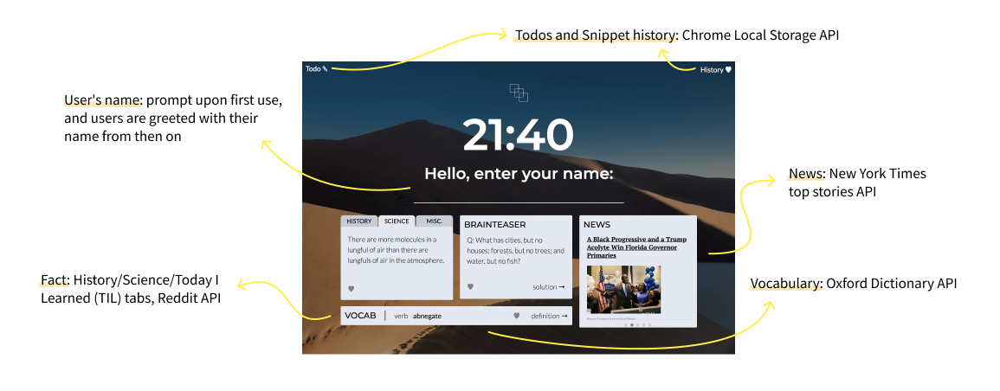

Snippet:
an educational Chrome Extension

Snippet is the Chrome Web extension that fulfills the curiosity cravings
of its users with easy-to-digest learnings.
It provides extracts from categories ranging from vocabulary to biology in place of Chrome's New Tab page
that will keep their minds fresh with knowledge.
For details, read on!
Type
JavaScript, jQuery, variety of APIs (Chrome, Local Storage, Reddit, NYTimes, etc)
Date
Aug 2018, updated Aug 2020
During a gap year before attending university, I learned the basics of full-stack development at a coding bootcamp. After the bootcamp concluded, I missed the fast-paced environment and constant stream of new information.
I wanted to create a lightweight, elegant project to help people learn "snippets" of information outside of a school environment. My hope is that Snippet's snippets brighten the user's day in addition to teaching them interesting facts.
Snippet has 4 information "snippets" (fact, brainteaser, news, vocabulary) and some additional features, many of which are powered by APIs.
For more details on the technical implementation of the extension, especially the favoriting, flipping, and carousel features, check out the extension's Github repository or the download site!